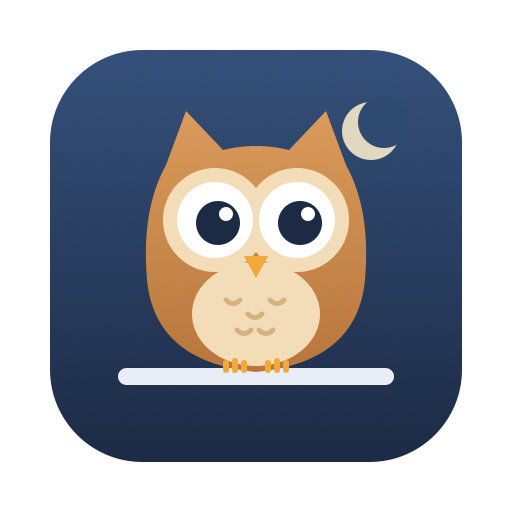

To use Hoot, turn it on in Safari’s Extensions settings, then allow it on youtube.com.
Hoot is on. Open any YouTube video in Safari, and use the owl button in Safari’s toolbar to choose what it hides.
Hoot is installed but turned off. Turn it on in Safari’s Extensions settings, then allow it on youtube.com.